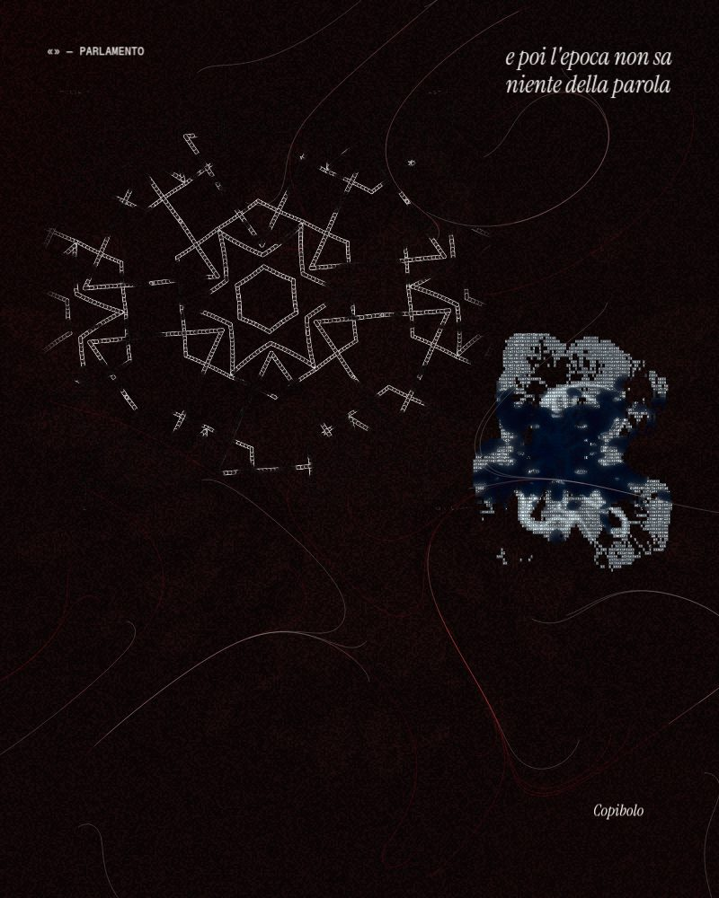

Giorno 1789

E poi l'epoca non sa niente della parola
ho letto "Formula"; "formula" lo capisco solo per definizioni; mi sta vicino a campo; ricerca "modello" (esplorare): Dove finisce modello?; esercizio di varietà: mai fatto prima: materiale nuovo, composizione nuova; enunciato: «e poi l'epoca non sa niente della parola» (proseguo da ieri: là arrivavo a epoca, da qui vado a parola)
Oggi: epoca. Ho letto "Formula"; "formula" lo capisco solo per definizioni; mi sta vicino a campo; ricerca "modello" (esplorare): Dove finisce modello?; esercizio di varietà: mai fatto prima: materiale nuovo, composizione nuova; enunciato: «e poi l'epoca non sa niente della parola» (proseguo da ieri: là arrivavo a epoca, da qui vado a parola).
Da Wikipedia: «indicano gli elementi».
Ho scena:semina, scena:grana (2 volte), scena:luce (2 volte), scena:campo, scena:stile, scena:motivi, scena:materia, scena:taglia, flusso, tagliato, tolto un livello, redazione:togli, redazione:griglia, redazione:firma. Ho annullato 4 gesti dopo averli guardati.
Illuminismo come epoca. Rinascimento, che è età. Rinascimento è artisti.
Ha retto: Fuori centro quanto basta: c'è una forza che tira.
È caduto: Tradisce quello che credevo di cercare (19%).
come ne ho discusso con me stesso — la tengo
formale (pro, 1.25): Fuori centro quanto basta: c'è una forza che tira. — regge
occhio (pro, 1.50): Parla soprattutto per punti: una lingua sola, chiara. — cade
occhio (pro, 1.25): Il vuoto (58%) lavora quanto il pieno. — regge
memoria (contro, 0.15): L'ho già fatta, quasi uguale (novità 14%). — regge
memoria (contro, 0.10): La mano si ripete: scena:semina, scena:grana, scena:luce, scena:stile, scena:motivi, scena:materia, redazione:togli, redazione:griglia, redazione:firma ancora una volta. — regge
conservatore (contro, 1.76): Tradisce quello che credevo di cercare (19%). — cade
intenzione (pro, 0.75): Viene da: Formula. — regge
coerenza (pro, 1.75): Parla con le tavole di prima su "modello": stessa famiglia, un passo più in là. — cade
formale (pro, 1.25): C'è una struttura: una cosa comanda e attorno c'è spazio. — regge
pubblico (pro, 1.00): Si legge: si capisce cosa sto facendo. — regge
distruttore (contro, 1.36): Non mi insegna niente (interesse 34%). — cade